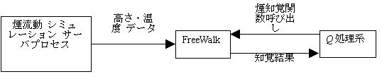

我々の仮想都市空間システム「FreeWalk/Q」による群集シミュレーションを，独立行政法人消防研究所の火災擬似体験システム「Fire Cube」による煙流動シミュレーションに接続した．これによって，火災によって発生する煙が避難群集の行動に与える影響をシミュレートすることが可能となった．
屋内火災では煙に巻かれて人命が失われることが多く，煙から逃れる避難行動の解明とそれを円滑化する誘導法の確立が重要である．実際に煙を発生させ多数の被験者を参加させる避難実験はコストが高いだけでなく危険をともなうため，コンピュータシミュレーションが有効である．これまでに煙流動や群集行動のシミュレーションが多数開発されてきている．これらのシミュレーションのほとんどは科学的分析を目的とした非体験型である．分析で得られた仮説は人間の被験者を用いた実験によって確認すべきであり，それには分析結果を人間が体験可能なシミュレーションが必要となる．FreeWalk/QやFire Cubeが目指すシミュレーションは分析結果の体験を目的とするものである．FreeWalk/QおよびFire Cubeによる火災避難シミュレーションは，その中に人間が入ることのできる参加型のシミュレーションである（図１）．
FreeWalk/Qの群集行動シミュレーションは人間の参加を可能とする社会的なマルチエージェントシミュレーションである．個々のエージェントは，他のエージェントに対しても人間が操作するアバターに対しても同様の社会的反応を示すよう設計できる．エージェントとアバターが混在する仮想群集の中において，各エージェントが周囲の状況に対してどう反応しどう行動するかという規則を容易に記述・実行可能である．FreeWalk/Qは，行動規則を記述するための言語であるQと，その記述にもとづいてエージェントを仮想空間内で行動させるFreeWalkから構成される．

図１．煙流動と避難群集の参加型シミュレーション
FreeWalkはエージェントの知覚や動作を実行する関数を備え，それらへのAPIを呼び出す規則がQ言語による記述に相当する．例えば，「非常階段に殺到する群集を見ると自分も非常階段に向かう」という規則は，「周囲のエージェント群の移動先が非常階段であるか調べる関数を呼びだし，もしそうであれば自分もそこへの移動を開始する関数を呼び出す」という制御に変換される．異なる場面ごとに規則集合を定義したものをQシナリオと呼ぶ．
Fire Cubeの煙流動シミュレーションは，数値計算の結果を身体的に実感することのできるVR型シミュレーションである．嗅覚や温度感覚を通して煙を感じることで，視覚だけでは得られない緊迫感や焦燥感を呼び起こすことができる．仮想的な屋内空間の中に充満する煙を大型立体視スクリーンに表示するとともに，それと同期して人体に無害な物質でできた煙を煙発生装置により周囲に噴出させることが可能である．煙流動シミュレーションのサーバプロセスは，空間全体を部屋や廊下などの構造的な単位ごとに分割するゾーンモデルにもとづいて煙の流動を計算し，高さ・温度・すす濃度のデータを生成する．画面描画プロセスや煙発生装置はそれらのデータに従って煙の描画・発生を実行する．
これら2つのシミュレーションを結合するために，自分の周囲に充満した煙をエージェントが知覚できる機能を実装した．ある避難者の生存状態は，その避難者が吸い込む煙の温度を時間で積分した値で推定できることが知られている．そこで，煙を吸い込んでいるかどうかと，その煙の温度がどれくらい高いかを知覚できるようにした．まず，煙流動シミュレーションのサーバプロセスとFreeWalkを結合し，煙の高さと温度のデータを受け取れるようにした．次にエージェントが煙を知覚するためのAPIをFreeWalkに追加し，それを使ったQシナリオを記述できるようにした．図２に構成を示す．これによって，煙が充満するに従って変化する群集行動を記述できるようになった．

図２．FreeWalk/QとFire Cubeの連結
文献：
山田 常圭, 阿部 伸之, 飯田 明彦, 山田 茂, 須賀 昌昭, 鈴木 修. バーチャルリアリティー技術を用いた火災擬似体験システムの開発 - その2 インタラクティブ機能を有する火災擬似体験システム構成と適用事例 -. 日本建築学会全国大会, 講演番号3113, 2004.
連絡先：
京都大学 社会情報学専攻 中西英之 nakanishi at i.kyoto-u.ac.jp